Beschreibung der Schwingungen einer runden, am Rande eingespannten Membran.
Die Differentialgleichung ist linear, partiell und vom hyperbolischen Typ. Sie hat in kartesischen Koordinaten bzw. in Polarkoordinaten die Form
Die Anfangs- und Randbedingungen lauten
Zur Lösung wird die Methode der Variablentrennung verwendet. Einsetzen des Produktansatzes für die drei Variablen
in die Differentialgleichung in Polarkoordinaten liefert
Daraus ergeben sich in Analogie zu den vorangegangenen Beispielen Saitenschwingungsgleichung und Stabschwingungsgleichung die folgenden Differentialgleichungen:
bzw.
Aus den Bedingungen 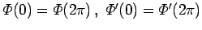 folgt
Aus 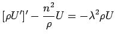 und U(R) =0 werden U und  bestimmt. Berücksichtigung der selbstverständlichen Bedingung der Beschränkung von 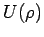 für 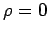 und Substitution von 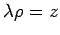 ergibt
bestimmt. Berücksichtigung der selbstverständlichen Bedingung der Beschränkung von 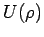 für 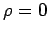 und Substitution von 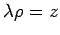 ergibt
wobei Jn die BESSELschen Funktionen sind mit 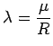 und 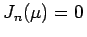. Das Funktionensystem
mit 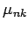 als k-te positive Nullstelle der Funktion Jn(z) ist ein vollständiges System aller Eigenfunktionen des selbstadjungierten Problems vom STURM-LIOUVILLEschen Typ, die orthogonal mit dem Gewicht  sind.
sind.
Die Lösung der Aufgabe wird in der Gestalt der Doppelreihe
angesetzt. Aus den Anfangsbedingungen folgt für t =0
woraus sich ergibt
Im Falle n =0 ist die im Zähler stehende 2 durch eine 1 zu ersetzen. Zur Bestimmung der Koeffizienten cnk und dnk wird 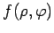 durch 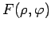 in den Formeln für ank und bnk ersetzt und mit 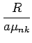 multipliziert.